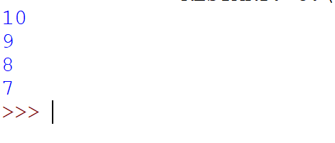

W języku python funkcje zapisujemy jako def nazwa_funkcji(): Funkcja jest to np. dodawanie, odejmowanie. Jeżeli zapiszemy dany script. W funkcji to musimy wywołać funkcje a robimy tak: nazwa_funkcji() . ☇
W nawiasach można podawać różne parametry. W tym przypadku prosimy o podanie parametru o nazwie tekst. Parametrami mogą być np. liczby. Funkcji z liczbami będziemy używać w kalkulatorze. W tym przypadku jest jeden argument, a można ich podać więcej np. def nazwa(tekst,liczba): ☇
Do stworzenia kalkulatora użyjemy funkcji o nazwie odejmowanie, dodawanie, mnożenie i dzielenie. W pierwszej części tworzymy 4 funkcje. Każda funkcja dokonuje dane jej obliczenia. A następnie printujemy wynik. W drugiej części prosimy o padanie operatora następnie sprawdzamy jaki operator został podany. Jeśli dany operator został podany to wywołujemy odpowiednią funkcje. Na końcu programu jest else czyli - jeśli wyższe warunki nie są spełnione to wyprintujemy "Błędna operacja." ☇
W Pythonie używane są dwa rodzaje pętli: while i for.
Pętla for "przebiega" przez podany ciąg liczb albo znaków. Łatwo można wytłumaczyć to tak że z wyrazu python zostanie zapisana do zmiennej tymczasowej x i wypisana.
Wygląda to tak: ☇
Pętla while dopóki warunek jest spełniony. Przykładem jest dopóki zmienna a jest mniejsza od zmiennej b.
Ten program wypisze nam to:
break jest używany do zakończenia pętli for i while, podczas gdy continue pozwala opuścić blok instrukcji niżej i wrócić do nagłówka pętli. Kilka przykładów: ☇
Stwórz kalkulator który poprosi o podnie 3 liczb/cyfr. Możesz wykorzystać poprzedni script.